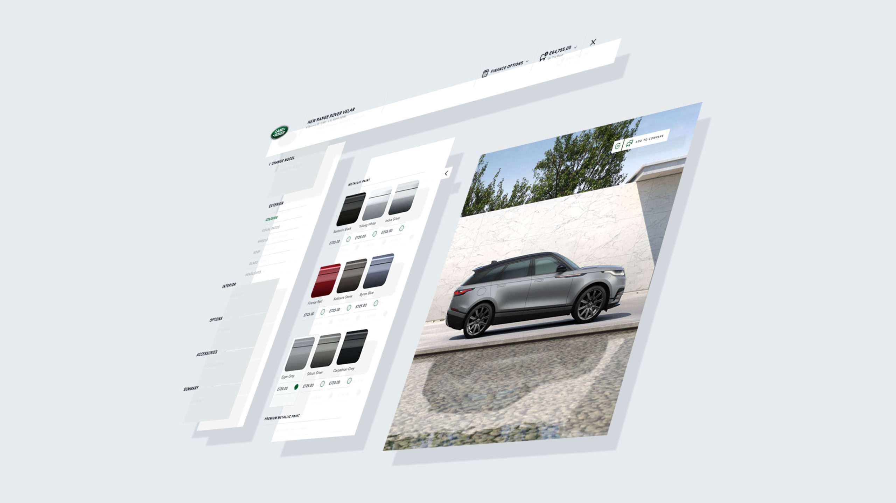
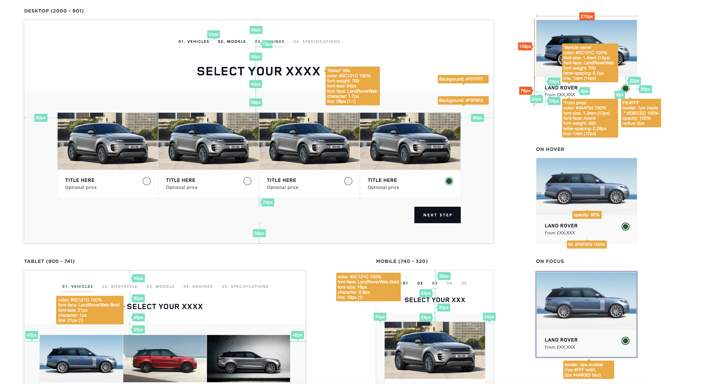
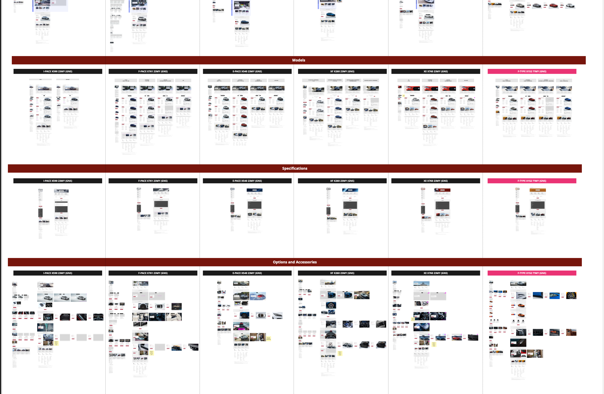
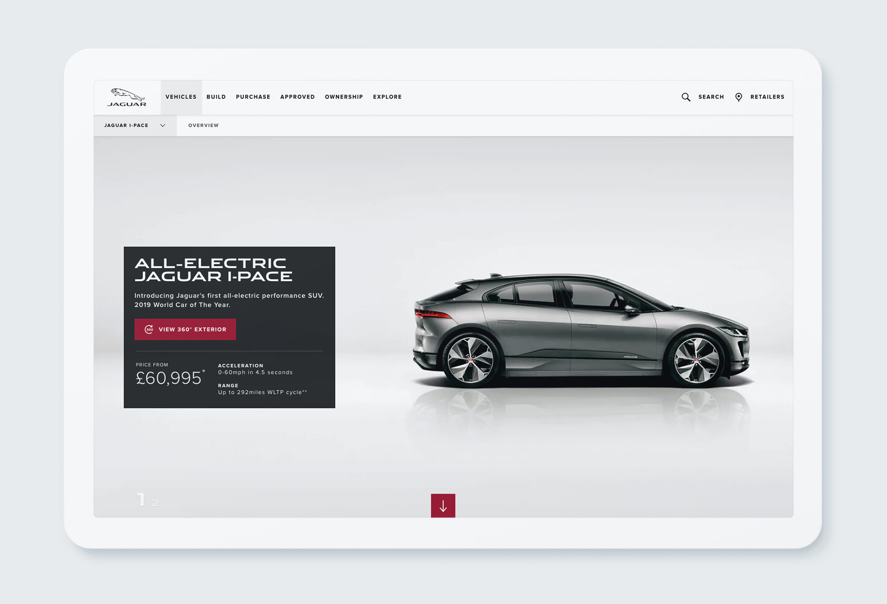
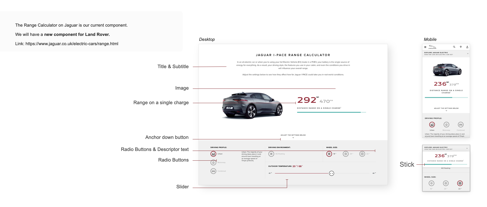
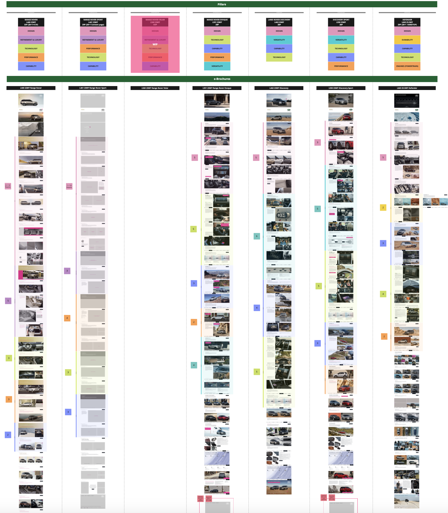

Leading UX architecture for the Jaguar Land Rover vehicle configurator — streamlining a complex, multi-market customisation experience across 23 global territories, from research and wireframing through to accessibility compliance and Agile sprint delivery at Accenture.
Role
UX Architect (Accenture)
Scope
UX Direction, Wireframing, Research & Analysis, Accessibility, Sprint Planning
Platform
Web · Mobile · Tablet · Automotive
Year
2023–2024

01 — The Brief
The brief was clear in ambition: design a cutting-edge vehicle configurator that streamlines the car customisation journey, drives lead generation, and outperforms competitors in the automotive market. But the complexity behind that brief was significant. The configurator needed to work seamlessly across every JLR vehicle model — presenting users with finance options, pricing details, packages, and full exterior and interior customisation at every step — while also adapting to the regulatory, linguistic, and UX expectations of 23 different markets, from Spain to the US to the UK.
As UX Architect at Accenture, I was embedded within the JLR digital team, working across product owners, Scrum Masters, UI designers, and developers to deliver a coherent, user-centred experience that could scale globally without losing the premium feel that defines both the Jaguar and Land Rover brands.
Each model required a unique configuration path — finance options, package structures, and exterior/interior choices all varied significantly across the range.
23 markets meant 23 sets of UX expectations — from legal compliance in the US to language and layout nuances across Europe and beyond.
Users were starting the configurator but not finishing it — a complex, unclear journey was losing potential leads before they could become buyers.
A significant share of configurator traffic arrived on mobile and tablet — but the experience was designed primarily for desktop, creating friction on the devices where users needed it most.

02 — Research & Process
Before defining any solution, I conducted a comprehensive research phase combining quantitative behavioural analysis with qualitative investigation. Using Crazy Egg, Hotjar, and Google Analytics, I audited live user behaviour — tracking where drop-offs occurred, which steps caused hesitation, and what patterns emerged across markets. Competitor analysis extended beyond the automotive industry, looking at configurator-style experiences in other sectors to identify patterns and innovations that JLR could learn from.
I led workshops with the team and stakeholders to ensure alignment on user needs and project goals. I created personas by analysing JLR's existing persona database and refined them to better reflect current user behaviour. To simplify complex journeys, I developed user flows that made the configurator logic clear and actionable for UX engineers, developers, product owners, and senior stakeholders alike. Operating within an Agile framework, I participated in weekly sprint planning calls, prepared deliverables for each sprint, and held regular sessions with product owners to present progress and refine direction based on feedback.

03 — Concept
Research revealed a crucial insight: the configurator's complexity was its greatest conversion barrier. Users who could follow the journey to completion were engaged and confident — but too many were abandoning before they got there. The concept centred on simplicity: breaking the customisation process into three clear, sequential steps — choosing from options, selecting preferences, and reviewing choices — gave users a mental model of where they were and what came next.
This structure was extended carefully to mobile and tablet, where the same simplicity principle drove interaction decisions — thumb-friendly navigation, progressive disclosure, and a persistent summary that kept users oriented throughout. Accessibility was built in from the start, not retrofitted. I developed comprehensive Accessibility Guidelines covering VoiceOver functionality, touch interactions, and information hierarchy — a critical requirement for compliance in the US market and a broader commitment to inclusive design.

04 — Sprint Delivery
Following stakeholder approval of the UX architecture, I led the subsequent delivery phase. I shared in-depth research findings and UX rationale during stakeholder and sprint team meetings, then actively engaged with the team through sprint planning sessions — shaping upcoming sprints, addressing blockers, and providing consistent feedback during demos to ensure each increment remained aligned with the product vision.
Collaboration spanned development teams in Birmingham and London, requiring clear documentation and a rigorous approach to handover. Beyond my core UX responsibilities, I also contributed UI support whenever needed — balancing both disciplines to maintain a coherent, visually consistent experience. One of the more distinctive contributions was introducing realistic 360-degree CGI backplates and enhanced vehicle views within the configurator — elevating the premium feel of the product and giving customers a genuinely immersive sense of their configured vehicle.

05 — Key Features
Every element of the configurator was designed with care — from the overarching structural decisions to the smallest interaction detail. By achieving a balance between form and function, and addressing both business objectives and user preferences, the resulting experience is streamlined, high-quality, and consistent with the premium standards of both brands.

06 — Outcome
The redesigned JLR vehicle configurator delivered measurable improvements across every key metric. By simplifying the user journey, improving the mobile and tablet experience, making finance options clearer, and introducing features that gave users confidence at every step, the configurator moved from a source of friction to a genuine conversion engine for the business.
The results reflected the scale of the project and the precision of the approach — across 23 markets, in two premium automotive brands, with configurations running into the tens of millions.
Dealer Conversion
+41%
Lead Generation
+168%
Vehicle Configuration
+114%
Vehicles Configured
45M globally
07 — Reflection
Key Learning 01
In complex enterprise products, simplicity is not a design aesthetic — it is a strategic choice. Every layer of complexity you remove is a conversion barrier you eliminate.
Key Learning 02
Working across 23 markets taught me that global UX is not about finding one universal solution — it is about designing a system flexible enough to serve different expectations without losing coherence.
Key Learning 03
Accessibility built from the beginning is not a constraint — it is a signal of design quality. The same decisions that improve VoiceOver support tend to improve the experience for every user.
Next project
Abbott Lyon — Luxury Shopify Experience →Whether you're building a configurator, a multi-market platform, or a high-stakes enterprise product — let's talk about what a structured UX approach could unlock.
Start a conversation →